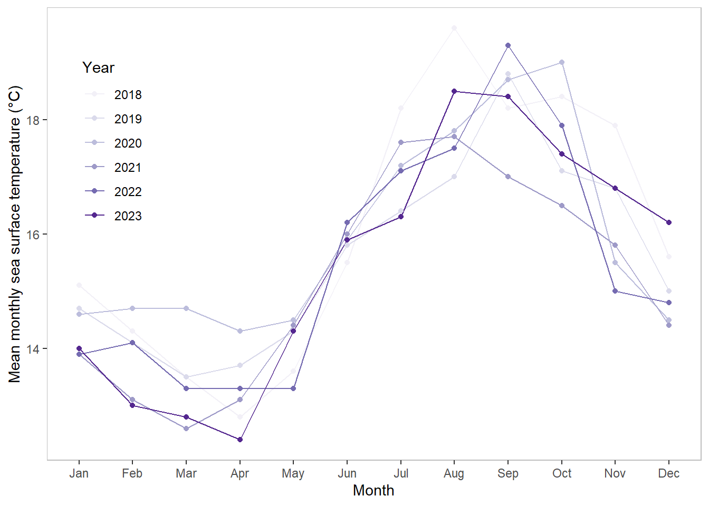

#loading in packages
library("tidyverse")
library("lubridate")
library("janitor")
library("here")
library("gt")spring_2025_final
Github repository: https://github.com/arara4191/ENVS-193DS_spring-2025_final.git
Problem 1
a.
In part 1 they used a Pearsons test which can be identified by their usage of the word “correlation” when looking at the distance from headwater (km) and annual total nitrogen load.
In part 2 they used a one-way ANOVA test which can be identified by them comparing a single grouping variable(nitrogen load) with more than three subgroups(urban land, atmospheric deposition, fertilizer, wastewater treatment, and grasslands).
##b.
An equal variance test should be included using a Levene test. This will help determine if the sample sizes are equal and that there are no biases within the urban land, atmospheric deposition, fertilizer, wastewater treatment, and grasslands data. Homogeneity is a required component of the ANOVA test. Another test that should be conducted is the Shapiro-Wilk normality test. The ANOVA test depends on the data being normally distributed and conducting this test will help determine that the data is normally distributed.
##c.
Part 1:
A statistically significant correlation between between distance from headwater(km) and annual total nitrogen load (kg year-1) was found (Pearson’s r = correlation coefficient, p = 0.03, α = significance level]).
Part 2:
A difference was found between the average nitrogen load (kg year-1) and urban land, atmospheric deposition, fertilizer, wastewater treatment, and grasslands sources (one-way ANOVA, F(among groups df, within groups df) = F-statistic, p = 0.02, $= significance level).
#Problem 2
# reading in sea surface temperature data
sst <- read_csv("C:/Users/arant/Desktop/ENV S 193DS-R/ENVS-193DS_spring-2025_final/data/SST_update2023.csv")##a.
# cleaning sst dataset using tidyverse and lubridate packages
sst_clean <- sst %>% # creating a new data frame using data from sst
mutate(year = factor(year(date)), # creating new column "year" using year function that selects the year observation in the "date" column
month = month(date,label = TRUE)) %>% # creating new column "month" using month function that selects the month observation in the "date" column
filter(year == c("2018", "2019", "2020", "2021", "2022", "2023")) %>% # selecting years 2018 - 2023
select( -site, -latitude, -longitude, -date) %>% # deleting columns
select(year, month, temp) %>% # reordering columns
group_by(year, month) %>% # grouping data by year and month
summarize(mean_monthly_sst = round(mean(temp), digits = 1)) %>% # using grouped data to find mean temp of each month per year and rounding
ungroup() #ungroup the data to be worked with normally later
slice_sample(sst_clean, n = 5) #display 5 random rows from sst_clean# A tibble: 5 × 3
year month mean_monthly_sst
<fct> <ord> <dbl>
1 2023 Jul 16.3
2 2018 Aug 19.6
3 2021 Jul 17.6
4 2021 Mar 12.6
5 2020 Oct 19 #will not display only 5 rows if grouped
str(sst_clean) #display sst_clean data structuretibble [72 × 3] (S3: tbl_df/tbl/data.frame)
$ year : Factor w/ 42 levels "1982","1983",..: 37 37 37 37 37 37 37 37 37 37 ...
$ month : Ord.factor w/ 12 levels "Jan"<"Feb"<"Mar"<..: 1 2 3 4 5 6 7 8 9 10 ...
$ mean_monthly_sst: num [1:72] 15.1 14.3 13.5 12.8 13.6 15.5 18.2 19.6 18.2 18.4 ...##b.
# setting up baseplot for rain data
sst_plot <- ggplot(data = sst_clean , # using sst_clean dataset for plot
aes(x = month, # represents month
y = mean_monthly_sst,#represents total data
color = year, # data will be colored by year groupings
group = year)) + #Ensures that data points from the same year are grouped together
geom_line() + # adds lines to plot
geom_point() + # adds points to each month
scale_color_brewer(palette = "Purples") +
labs(
x = "Month", #adding x axis title
y = "Mean monthly sea surface temperature (°C)") + # adding y axis title
theme(legend.position= c(0.1,0.7), # adjusting the position of the legend
panel.background = element_rect(fill = "white"),#making panel background white
panel.border = element_rect(color = "grey", fill = NA),
plot.title.position = "plot") + # aligns title position to the left
guides(color = guide_legend(title = "Year")) # renaming legend title
#showing plot
sst_plot
#Problem 4
##a. How are the visualizations different from each other in the way you have represented your data? * My data in homework 2 is physically separated by fast and slow music recordings in box plots while my data in homework 3 is mixed together in a circular diagram only distinguished by the type of color used for each data point. My data in homework 2 took a more statistical approach while homework 3 took an artistic approach and used softer shapes and doodles to represent information.
What similarities do you see between all your visualizations? * The similarities I see between my visualizations is that each had limited data points as they were both in the early drafting stages. They both still used pink to represent fast music bike rides and blue/green colors for slow music bike rides. Another big similarity that stood out was that there were more recorded observations for fast music bike rides in comparison to slow music bike rides.
What patterns (e.g. differences in means/counts/proportions/medians, trends through time, relationships between variables) do you see in each visualization?Are these different between visualizations? If so, why? If not, why not? * Aside form there being a trend of more fast music bike rides recorded, it can be seen that fast music bike rides have some of the highest recorder biking speeds (mph) across both visualizations. This is seen as bigger circles in homework 3 and in higher data points in the box plots y-axis(above 13 mph). Another pattern that can be seen in homework 3 is that I mainly biked past noon(denoted by orange dots around data point observations). These observed patterns are different between visualizations because the artistic visualization in homework 3 fits more data into a singular image (time, music type, wind presence, biking speed) than the limited data information in homework 2 (music type, biking speed).
What kinds of feedback did you get during week 9 in workshop or from the instructors? How did you implement or try those suggestions? If you tried and kept those suggestions, explain how and why; if not, explain why not.